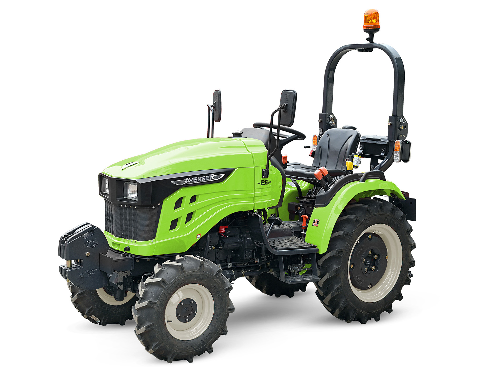

À Propos de NG isopure
Une nouvelle vision pour l'agriculture
Fondée par des passionnés d'agriculture, NG isopure est une jeune entreprise dynamique qui se spécialise dans la vente de matériel agricole de pointe. Notre mission est de fournir à nos clients des équipements fiables et performants, accompagnés d'un service client irréprochable.
Nous sélectionnons rigoureusement les meilleures marques pour vous garantir du matériel de haute qualité. La confiance et la satisfaction de nos clients sont au cœur de nos priorités.
Vente de Tracteurs

Vente de matériel neuf et d'occasion
Découvrez notre large gamme de tracteurs neufs et d'occasion, sélectionnés parmi les meilleures marques du marché pour leur performance et leur fiabilité.
Contactez-nous
Informations de contact
Rue du Long Chêne 46, 1970 Wezembeek-Oppem, Belgique
Horaires d'ouverture
Lundi - Samedi : 8h00 - 18h00
Contact par Email